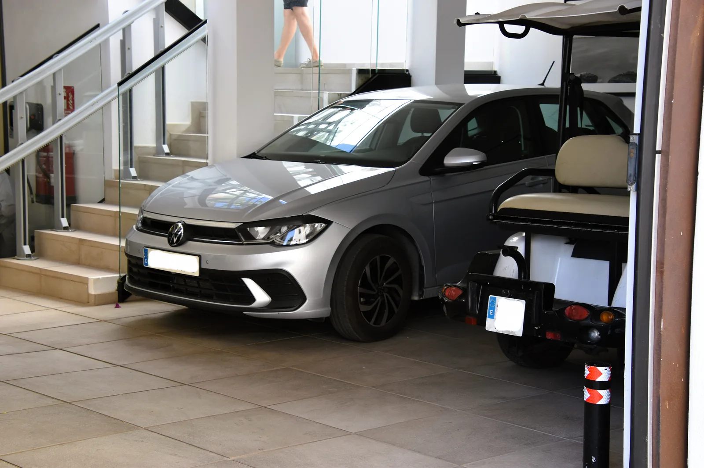
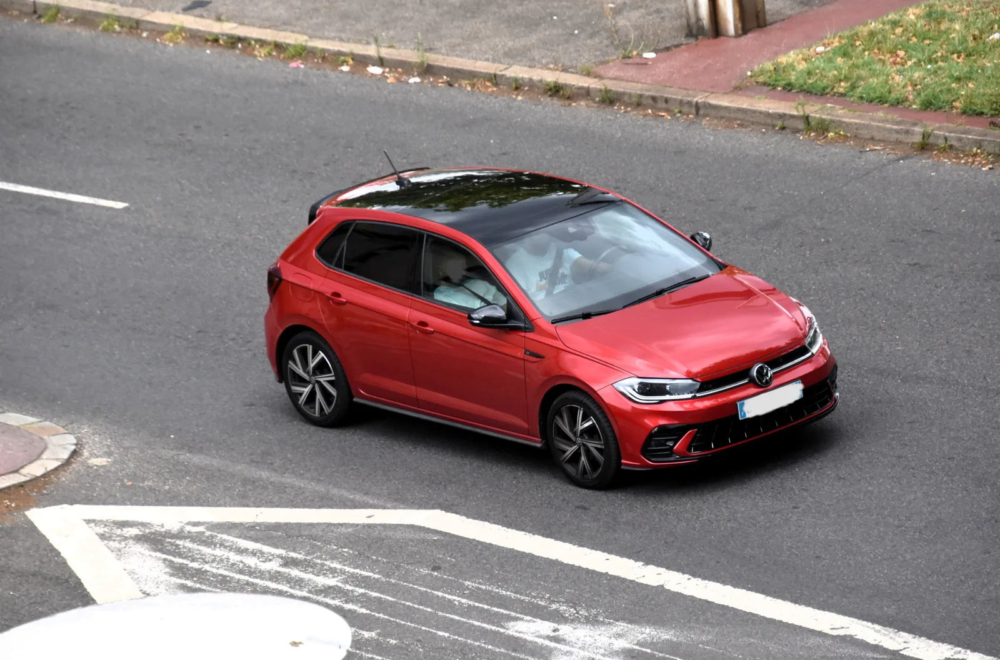

▲ 영국 굿우드 페스티벌 오브 스피드에 전시된 부가티 투르비용. 생산형 기준 가격은 옵션 제외 380만 유로(약 59억원)에 달한다
1. 시에라네바다 산악도로에서 벌어진 일
스페인 그라나다 인근 시에라네바다의 한 산악도로에서, 신형 폭스바겐 폴로가 부가티 투르비용 프로토타입의 뒷범퍼를 들이받는 사고가 발생했다. 부가티는 이 산악 구간에서 폭염 속 고지대 주행 테스트를 진행 중이던 투르비용 프로토타입을 도로 위에 내보내고 있었는데, 하필 그 뒤를 저가형 해치백인 폴로가 바짝 뒤따르고 있었다. 사고 장면은 현장을 지나던 차량의 블랙박스 영상으로 포착돼 온라인에 퍼지면서 화제가 됐다.
부가티가 신차 공개를 앞두고 다양한 기후·노면 조건에서 프로토타입을 검증하는 것은 흔한 절차지만, 이번처럼 도심이 아닌 일반 공도에서 예상치 못한 추돌 사고로 이어진 사례는 이례적이다.

▲ 사고를 낸 차종과 같은 신형 폭스바겐 폴로. 스페인 기준 최저 트림 가격은 1만 6,900유로(약 2,600만원)부터 시작한다 ⓒ Wikimedia Commons
2. 신호 앞에서 벌어진 3중 정지 실패
사고 경위는 이렇다. 도로공사 구간에 설치된 임시 신호등 앞에서 앞서가던 기아 차량이 먼저 멈춰 섰고, 뒤따르던 부가티 투르비용 역시 제때 제동해 정지에 성공했다. 문제는 그 뒤를 따르던 폴로였다. 영상에는 타이어가 짧게 미끄러지는 소리가 잡힌 뒤 곧바로 투르비용의 정교하게 다듬어진 뒷범퍼에 폴로 앞부분이 부딪히는 장면이 이어진다. 안전거리를 충분히 확보하지 못한 채 속도를 내다 앞차의 급정지에 대응하지 못한 전형적인 추돌 상황으로 풀이된다.
사고 직후 상황을 담은 영상은 충돌 장면에서 끝나, 정확한 파손 부위나 두 차량 운전자의 신원, 경찰 조사 여부 등은 공개되지 않았다. 폭스바겐과 부가티 양사 모두 이번 사고에 대한 공식 입장을 내놓지 않은 상태다.
3. 가격도, 존재감도 다른 두 대
이번 사고가 화제가 된 가장 큰 이유는 두 차량의 극명한 가격 차이 때문이다. 폴로는 폭스바겐 라인업에서 가장 저렴한 차종 중 하나이고, 투르비용은 생산 예정 250대 한정의 부가티 최상위 하이퍼카 프로토타입이다. 단순 가격만 놓고 보면 투르비용 한 대 값으로 폴로를 200대 넘게 살 수 있는 셈이다.
| 구분 | 폭스바겐 폴로 | 부가티 투르비용 |
|---|---|---|
| 차급 | 소형 해치백 | 하이퍼카(한정 생산) |
| 시작 가격 | 1만 6,900유로(약 2,600만원)~ | 380만 유로(약 59억원)~ (옵션 제외) |
| 생산 대수 | 양산 차종(무제한) | 250대 한정 |
| 파워트레인 | 가솔린 소형 엔진 | 8.3L 자연흡기 V16 + 전기모터 3기 |
| 합산 최고출력 | 트림별 상이(소형차 수준) | 1,775마력 |

▲ 도로를 주행 중인 신형 폴로. 사고를 낸 폴로의 정확한 색상과 트림은 공개되지 않았다 ⓒ Wikimedia Commons
4. 겉보기엔 경미해도, 수리비는 이야기가 다르다
영상만으로 확인되는 손상은 크지 않아 보이지만, 문제는 투르비용의 뒷범퍼 대부분이 카본파이버 소재로 만들어졌다는 점이다. 일반 철제 범퍼와 달리 카본 부품은 부분 수리가 어려워 손상 시 통째로 교체해야 하는 경우가 많고, 그마저도 소량 생산되는 전용 부품이라 단가가 매우 높다. 정확한 수리비는 아직 공개되지 않았지만, 투르비용 뒷부분에 적용된 정교한 디테일을 감안하면 상당한 금액이 될 것이라는 관측이 나온다.
📍 참고로 알아두면 좋은 것
부가티 투르비용은 아직 정식 출시 전 검증 단계의 프로토타입 차량이다. 이런 차량은 시중에 판매되는 개인 차량과 달리 제조사가 직접 보유·관리하며, 사고가 나더라도 일반적인 자동차 보험 처리 방식과는 다른 절차를 거치는 경우가 많다. 다만 이번 사고와 관련한 구체적인 보험·배상 처리 방식은 공식적으로 확인되지 않았다.
5. 부가티 투르비용은 어떤 차인가
투르비용은 부가티가 시론의 뒤를 이어 선보이는 차세대 하이퍼카로, 콥워스가 공급하는 8.3리터 자연흡기 V16 엔진이 핵심이다. 이 엔진 단독으로만 986마력을 내며, 여기에 전기모터 3기가 더해져 시스템 합산 최고출력은 1,775마력에 달한다. 순수 내연기관에 전동화를 더한 하이브리드 하이퍼카로, 부가티 특유의 12기통·16기통 초대형 엔진 전통을 자연흡기 V16으로 이어간다는 점이 특징이다.
생산은 250대로 한정되며, 가격은 옵션을 제외하고 380만 유로(약 440만 달러)부터 시작한다. 이런 희소성과 상징성 때문에 이번 사고가 더욱 눈길을 끌었다는 분석이다. 투르비용에 대한 더 자세한 정보는 부가티 공식 홈페이지에서 확인할 수 있다. 바로가기
✅ 이번 사고, 이것만은 확인하세요
· 장소는 스페인 그라나다 시에라네바다 산악도로, 정확한 사고 날짜는 공개되지 않음
· 도로공사 임시신호 앞에서 앞차(투르비용)는 정지했으나 뒤따르던 폴로가 제동하지 못해 추돌
· 폴로는 스페인 기준 1만 6,900유로(약 2,600만원)부터, 투르비용은 380만 유로(약 59억원)부터 시작
· 투르비용은 250대 한정 생산, 자연흡기 V16+전기모터 3기로 합산 1,775마력
· 손상은 카본파이버 부품 위주로, 정확한 수리비와 양사 공식 입장은 아직 공개되지 않음

▲ 투르비용 전면부 클로즈업. 후드와 헤드램프 테두리 곳곳에 노출 카본파이버가 적용된 것을 볼 수 있다 ⓒ Wikimedia Commons
6. 정리
스페인 시에라네바다 산악도로에서 벌어진 이번 사고는 흔한 안전거리 미확보가 원인이었지만, 상대가 250대 한정 생산되는 380만 유로짜리 부가티 투르비용 프로토타입이었다는 점에서 큰 화제를 모았다. 겉보기엔 경미한 접촉으로 보이지만 투르비용 후미의 카본파이버 부품 특성상 수리비는 상당한 규모가 될 가능성이 크다. 정확한 피해액과 두 회사의 공식 입장은 아직 확인되지 않은 만큼, 추가 소식이 나오는 대로 업데이트할 예정이다.